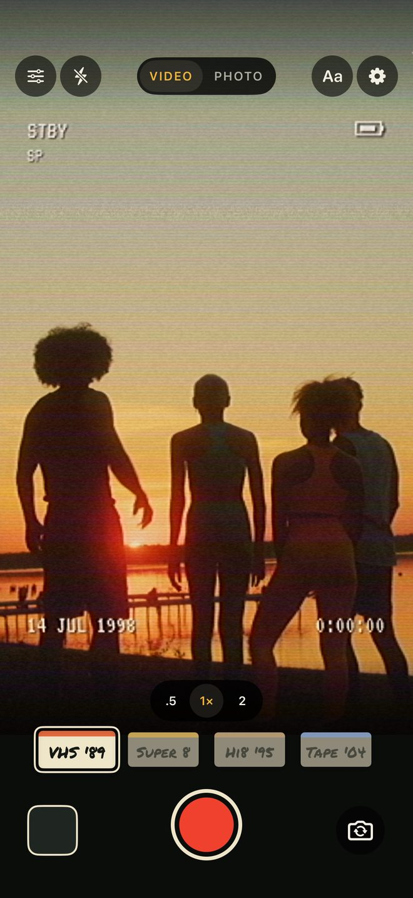
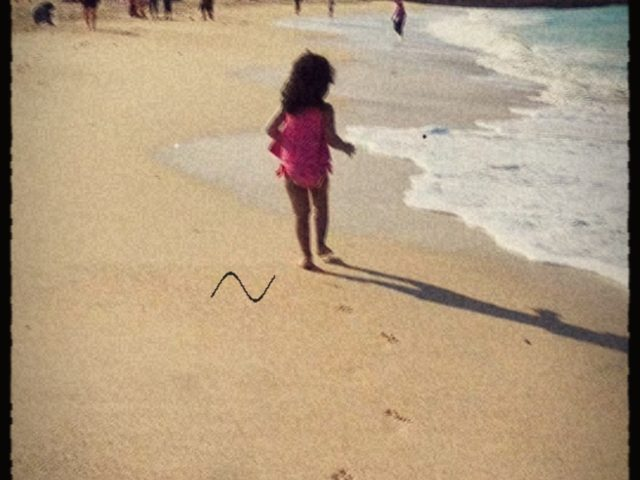
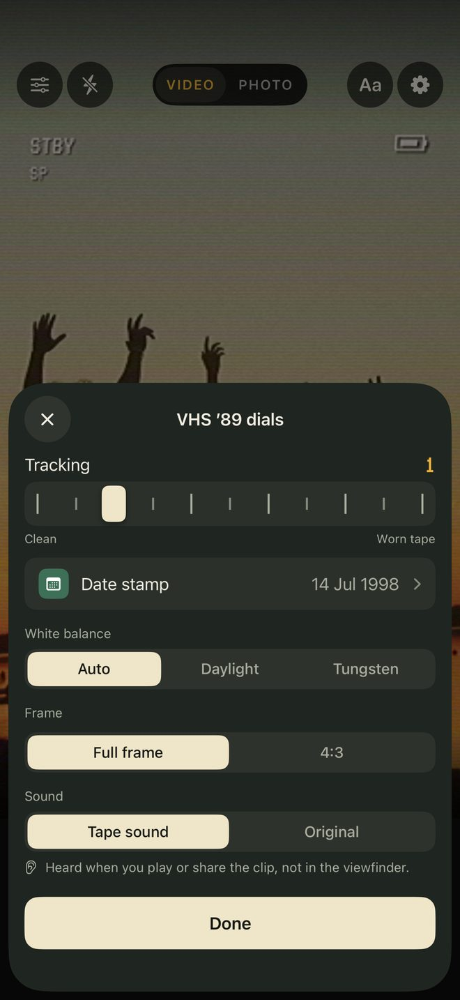

VHS ’89
CAMCORDER TAPE · 1980s
Tracking lines, colour bleed and the date stamp in the corner.
Home video, Super 8 and 2000s tape, live in the viewfinder. Every look is built from your camera, frame by frame, on your iPhone.

TAPE 1–4
Swipe the viewfinder or tap a label to change tapes. Each one has its own dials, like the camera it remembers.
CAMCORDER TAPE · 1980s
Tracking lines, colour bleed and the date stamp in the corner.

HOME FILM · 18 FPS
Film grain, dust and an optional projector hum.
Hi8 CAMCORDER · MID-90s
Sharper tape, the mid-90s date and time imprint.
DIGITAL TAPE · 2000s
Crisp 2000s digital tape with date and time on screen.
ALL FOUR TAPES INCLUDED.
REWIND
Camvo keeps a clean copy of each clip, so you can give it another tape after you film. Set the dials before or after.

PLAY
Camvo opens on the camera. Film, then keep it, send it or join it with others.
The look is live in the viewfinder, upright or sideways, front or back camera.
Video or photo, in 1080p. Clips from Photos can get a look too.
Best quality, most compatible, or a smaller file for messages.
Join clips into one, with a moment of tape snow between them.
REC · ON YOUR iPHONE
The looks are made on the phone. Nothing you film leaves it unless you save or share it.